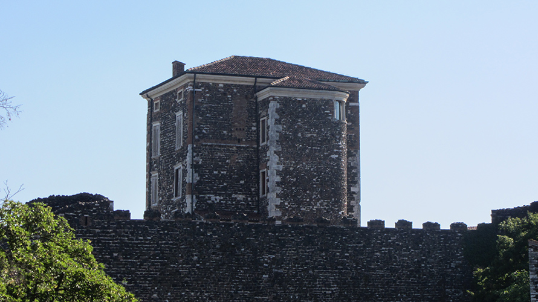
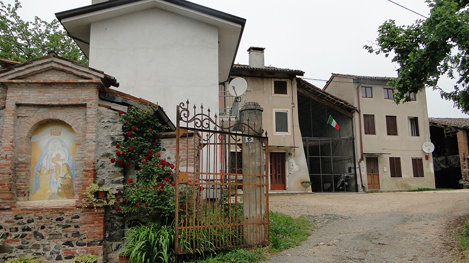
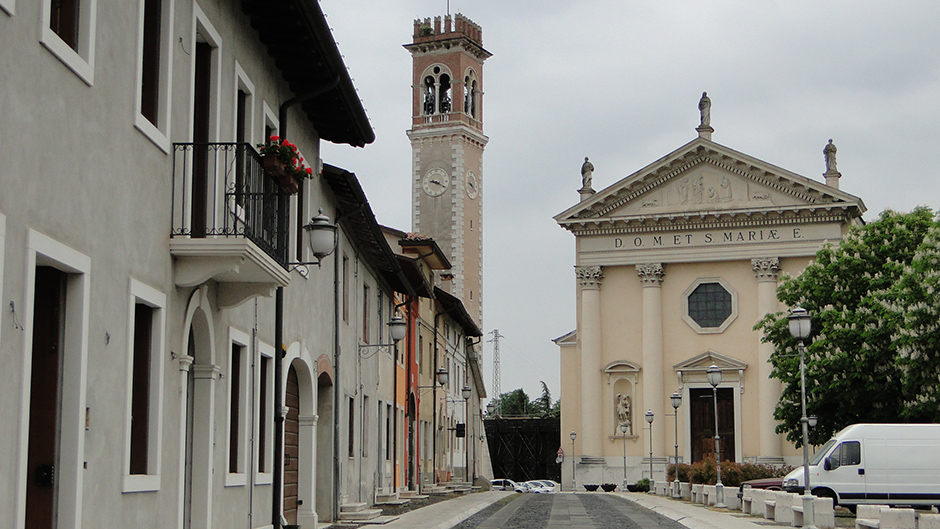
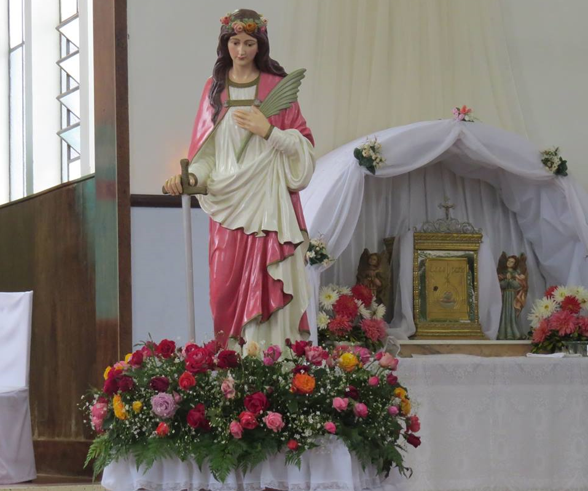

Família Molon
Principal
Sobre a família
Genealogia
Livro
Galeria de fotos
Notícias
Encontros
O 11º Encontro da família Molon aconteceu em 21 e 22 de outubro de 2023
Otávio Rocha - Flores da Cunha.
O tema foi "A força da família e da mulher Molon", e comemorou os 140 anos da chegada
dos imigrantes MOLON no Rio Grande do Sul.
Veja como foi o 11º Encontro!
O próximo encontro será em 2026, em Otávio Rocha, comemorando 35 anos de encontro da família (1991-2026).



